Parámetros Técnicos
1. Arquitectura Térmica
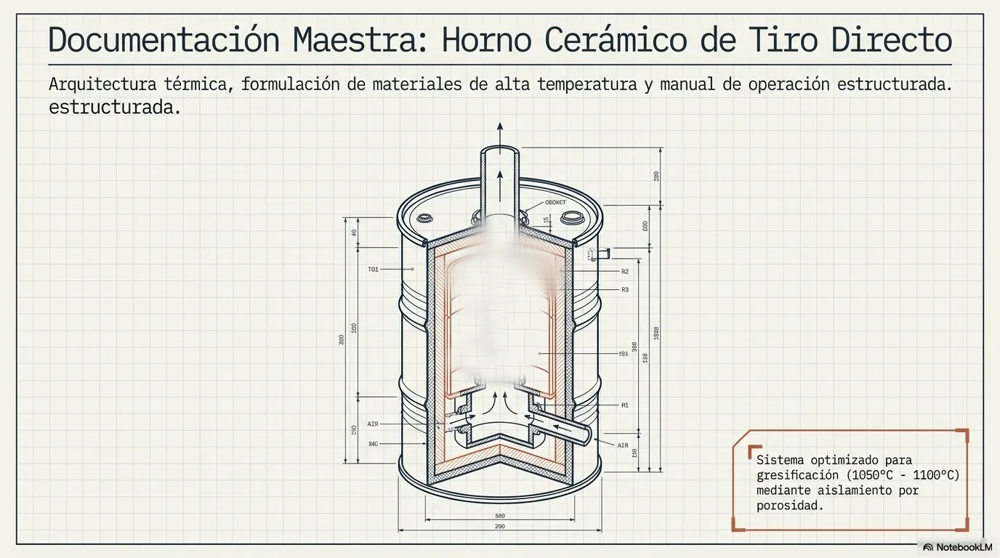
Diseño de un horno cerámico de tiro directo construido a partir de un contenedor metálico reciclado (200L).
El sistema se basa en el principio de aislamiento por porosidad. La eficiencia térmica no se logra mediante masa densa, sino a través de la micro-cavitación generada por la calcinación de la materia orgánica (aserrín) en la mezcla refractaria. Esto minimiza la conductividad térmica (K) hacia el exterior metálico, permitiendo que la cámara interna alcance temperaturas de gresificación (1050°C - 1100°C) con un consumo de combustible optimizado.
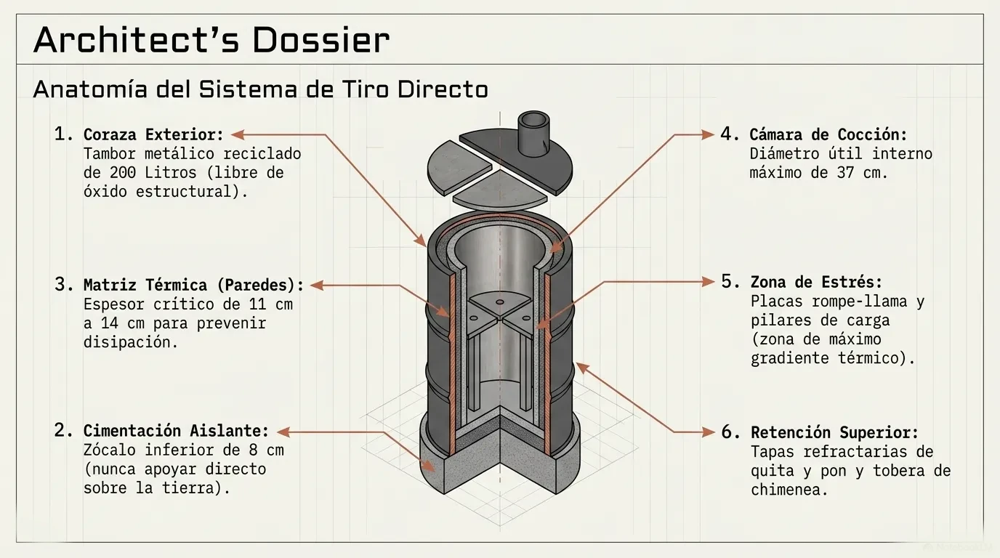
Las placas de carga son los elementos sometidos al mayor gradiente térmico y peso. Su formulación excluye elementos porosos, utilizando un esquema denso de Caolín y Carburo de Silicio para soportar el choque térmico y prevenir el colapso (creep) a altas temperaturas.
2. Guía de Especificaciones Técnicas
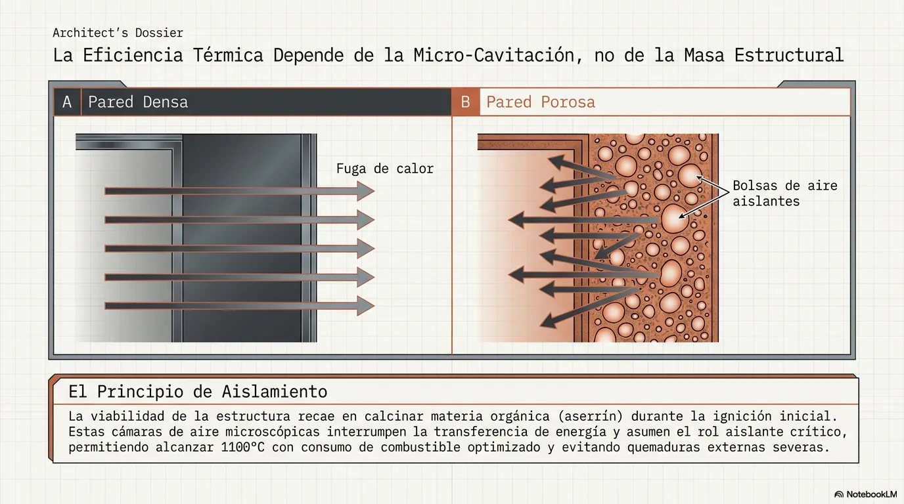
| Componente | Parámetro / Formulación | Tolerancia / Notas |
|---|---|---|
| Contenedor Base | Tambor metálico de 200 Litros. | Libre de óxido estructural severo, aislar de la tierra en la base para evitar deterioro. |
| Baja/Media Temperatura (Fórmula 1) | 1 parte de Cemento Portland, 1 parte de Arcilla (Tinkal), 2 partes de Chamote mediano + 50-60% de volumen en Aserrín. | El aserrín debe ser de madera blanca (ej. pino), estrictamente sin aglomerantes ni colas sintéticas. |
| Baja/Media Temperatura (Fórmula 2) | 30% de Caolín Triple Lavado, 30% de Arcilla blanca, 40% de Vermiculita (expandida). | Variante para quienes no consiguen chamote. Esta fórmula NO requiere añadir aserrín. |
| Alta Temp. (Paredes Porcelana) | 50% (1 parte) de Caolín triple lavado, 50% (1 parte) de Chamote mediano + 60% (3 partes) de aserrín por volumen. | Requiere caolín de alta pureza sin óxidos de hierro (ej. "Sur del Río"). No admite cemento ni arcilla común. |
| Espesor de Pared | 11 cm a 14 cm. | Crítico para prevenir disipación térmica y concentrar la energía en la cámara. |
| Diámetro Útil Interno | Máximo 37 cm. | Se define al insertar el encofrado y determina el tamaño máximo de las piezas a hornear. |
| Placas de Carga (Alta Temperatura) | 50% Caolín Triple Lavado + 50% Carburo de Silicio (malla 24 a 30). | Espesor placa rompe llama: 4 cm. Prensado casi en seco. JAMÁS debe llevar aserrín. |
| Temperatura Operativa | 1050°C - 1100°C (Baja/Media) o +1100°C (Alta). | El alcance térmico y la atmósfera dependerán del combustible y la administración del tiro. |
3. Mapa Conceptual del Sistema Térmico
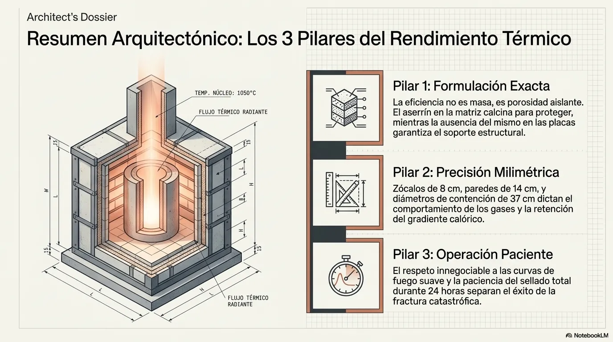
[ COMBUSTIBLE (Leña) ]
|
v
[ CÁMARA DE COMBUSTIÓN ] ---> (Generación de Energía Calórica)
|
+------------------------------------+
| |
v v
[ FLUJO ASCENDENTE ] [ PAREDES AISLANTES ]
(Tiro Directo) (Mezcla Porosa con Aserrín)
| |
v v
[ CÁMARA DE COCCIÓN ] <------------- (Retención Térmica / Refractariedad)
(Placas de Carburo/Caolín) |
| |
v v
[ TRANSFORMACIÓN QUÍMICA ] [ PROTECCIÓN EXTERIOR ]
(Arcilla -> Cerámica) (Tambor Metálico a baja temp.)
|
v
[ CHIMENEA / EXTRACCIÓN ]
(Control de Atmósfera: Oxidante/Reductora)
4. Gráficos y Diagramas de Estudio
Gráfico 1: Corte Transversal Frontal del Sistema
CHIMENEA (Tobera)
|| ||
___||___||___ <-- Tapas de Quita y Pon (Aislantes)
/ \
| [=========] | <-- Placa de Carga (Carburo de Silicio)
| ||PIEZAS|| |
| ||_AQUÍ_|| |
| [=========] | <-- Placa Rompe-llama (4cm espesor)
| | | | <-- Pilares refractarios
+--|---------------|--+ <-- Borde Superior de la Boca
| | FUEGO | |
| | / / | \ \ | | <-- Cámara de combustión
| | ( LEÑA ) | |
+--|---------------|--+ <-- Base del horno (Zócalo 8cm)
========================= <-- Base elevada (Ladrillos/Cemento)
Gráfico 2: Corte Superior (Top-Down) - Distribución de Masas
_______________________
/ \
/ ___________________ \
/ / \ \
| | TAMBOR EXTERNO | |
| | (Chapa Metálica) | |
| | | |
| | ############### | |
| | # MEZCLA # | |
| | # AISLANTE # | |
| | # 11-14 cm # | |
\ \ ############### / /
\ ------------------- /
\ _______________________ /
Gráfico 3: Matriz de Tapas (Encofrado de Media Luna)
ENCOFRADO VISTA SUPERIOR
------------------------
_ _ _ _ _ _ _
/ | \
/ | \
/ MITAD | MITAD \
| IZQ. (O) DER. | <-- (O) = Obturador (Lata 14cm diámetro)
\ | /
\ | /
\ _ _ _ | _ _ _ /
5. Manual Técnico de Operación y Horneada
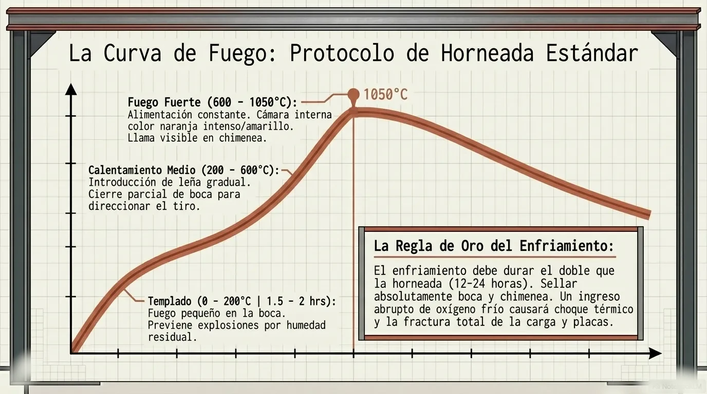
Fase A: Curado (Primera Quema)
La primera vez que se encienda el horno, su objetivo no es cocinar piezas, sino calcinar el aserrín atrapado en las paredes. Se debe hacer un fuego suave que aumente gradualmente durante 6-8 horas. Precaución: Emitirá mucho humo tóxico. Debe realizarse en exteriores bien ventilados.
Fase B: Carga de Piezas
- Colocar la placa rompe-llama apoyada en los pilares sobre la cámara de combustión.
- Distribuir las piezas crudas respetando un margen de 2 cm entre la pieza y la pared para permitir el flujo de gases.
- Colocar las tapas superiores y asegurar el sellado (se puede usar barro con arena para sellar las juntas si hay fugas).
Fase C: Curva de Fuego (Horneada Estándar)
- Templado (0 a 200°C): Fuego pequeño en la boca del horno. Duración: 1.5 a 2 horas. Evita explosiones por choque térmico o humedad residual en las piezas.
- Calentamiento Medio (200°C a 600°C): Introducir la leña gradualmente hacia el interior de la cámara. Cierre parcial de la boca para direccionar el tiro hacia la chimenea.
- Fuego Fuerte (600°C a 1050°C): Alimentación constante con leña seca (fina y mediana). La llama debe verse salir por la chimenea superior. La cámara interna brillará con un color naranja intenso a amarillo.
Fase D: Enfriamiento
Sellar completamente la boca del horno y la chimenea superior (con un ladrillo o chapa). No abrir bajo ninguna circunstancia antes de las 12-24 horas. Un ingreso abrupto de oxígeno frío fracturará tanto las piezas como las placas de carga.
6. Revisión Crítica y Parámetros de Seguridad Físico-Química
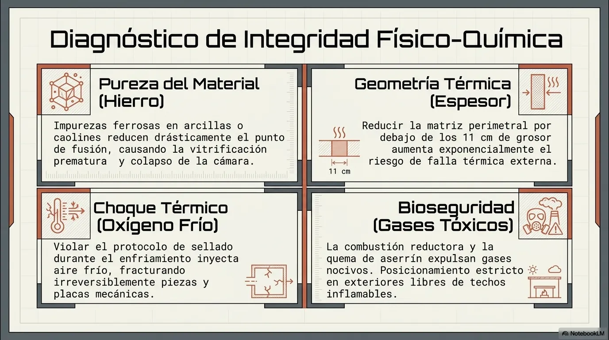
- Pureza de Materiales: Cuestiona siempre el nivel de hierro en sus arcillas y caolines. Las impurezas ferrosas reducen el punto de fusión, lo que provocará la vitrificación prematura de las paredes.
- Espesor Mínimo: Reducir el grosor de las paredes por debajo de los 11 centímetros aumenta exponencialmente el riesgo de falla térmica externa.
- Ventilación de Gases: Evalúa cuidadosamente el posicionamiento del horno. Durante la combustión reductora y la calcinación del aserrín en la primera quema, se expulsará humo tóxico derivado de potenciales aglutinantes en maderas de baja calidad. Nunca posiciones la estructura bajo techos inflamables.
Método

7. Preparación del Contenedor Principal y Base Térmica
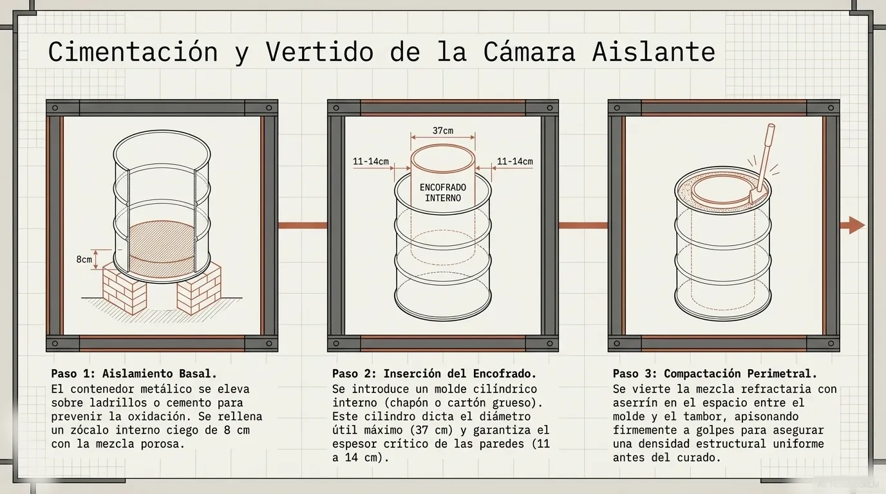
El diseño estructural parte de un tambor metálico reciclado de 200 litros. Para garantizar la eficiencia energética y la integridad estructural a largo plazo, el contenedor no debe apoyarse directamente sobre la tierra. Esto previene la disipación térmica y la oxidación de la chapa inferior. Debe erigirse sobre una base nivelada construida con ladrillos o cemento.
Esquema Estructural Frontal
_______________________ <-- Borde superior doblado 12 cm hacia adentro. | | | | | | | _________ | <-- Borde superior de la boca (a 38 cm del suelo). | | | | | | 25x30cm | | <-- Boca de entrada para leña. | |_________| | |_______||||||||________| <-- Zócalo base de 8 cm.
8. Formulación del Material Aislante (Paredes, Piso y Tapa)
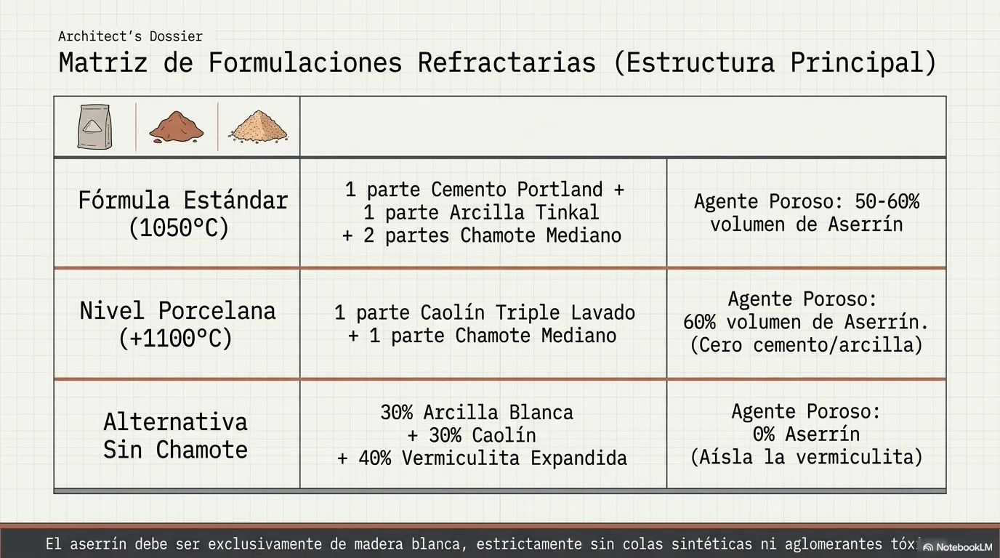
La viabilidad de la estructura depende de su porosidad. La mezcla debe aislar el calor interior e impedir la conductividad hacia el tambor exterior.
Fórmula Estándar (Rango 1050°C - 1100°C)
- 1 parte de Cemento Portland (agente de amalgama).
- 1 parte de Arcilla Tinkal o Arcilla Blanca (material plástico).
- 2 partes de Chamote mediano (material no plástico, previene rajaduras).
- 50% al 60% (del volumen total) de Aserrín de madera blanca tamizado y sin pegamentos.
Fórmula de Alta Temperatura (Nivel Porcelana)
- 1 parte de Caolín Triple Lavado (alta alúmina, vital para resistencia límite).
- 1 parte de Chamote Mediano.
- 60% extra de volumen de aserrín de madera blanca.
9. Construcción de la Cámara de Cocción
El espesor de las paredes que encapsulan la cámara es el factor termodinámico que determina el éxito del equipo.
- Cimentación Interna: Rellenar el zócalo inferior de 8 cm con la mezcla porosa.
- Encofrado: Insertar un molde cilíndrico interno (chapón o cartón grueso). El diámetro útil interno no debe exceder los 37 cm.
- Vertido: Apisonar firmemente la mezcla a golpes en el espacio perimetral.
Vista Superior de Flujo Termodinámico
___________________________ / _______________________ \ | / ^ \ | | | 11 a 14 cm de espesor | | <-- Pared de material aislante con aserrín. | | v | | | | [Cámara Interna] | | <-- Diámetro interno no mayor a 37 cm. | \ / | \ ----------------------- / --------------------------- <-- Tambor metálico exterior de 200 Litros.
10. Diseño de Tapas de "Quita y Pon" y Chimenea
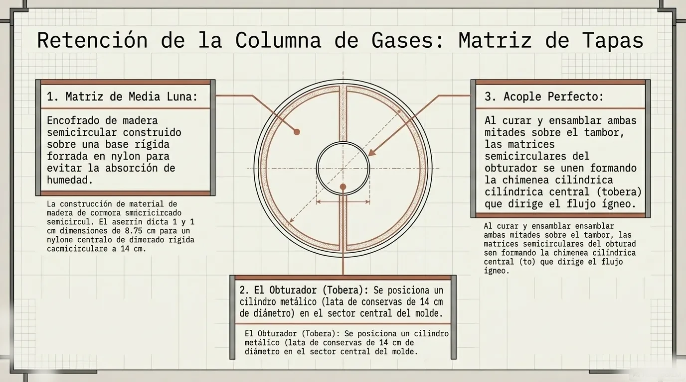
La retención de la columna de gases requiere que la estructura superior sea removible y eficiente.
- Construir un encofrado de madera en forma de media luna sobre una base rígida forrada en nylon.
- Colocar un obturador de aproximadamente 14 cm de diámetro (una lata de conservas funciona como matriz) en el sector designado de cada mitad.
- Al ensamblar ambas placas sobre el tambor, las matrices formarán el cilindro central (tobera) para la salida del flujo ígneo.
_ _ _ _ _ _ _
/ | \
/ | \
/ Tapa | Tapa \
| Mitad A O Mitad B | <-- "O" representa la lata/hueco de la chimenea.
\ | /
\ | /
\ _ _ _ | _ _ _ /
11. Formulación Crítica de Elementos de Carga
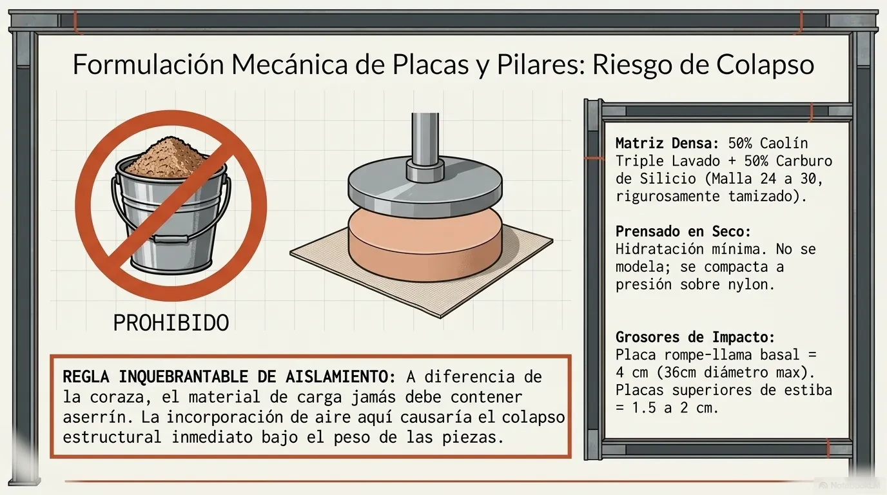
Las placas y pilares enfrentarán el mayor vector de estrés mecánico y térmico. Esta zona requiere rigor analítico.
Fórmula Compacta de Alta Resistencia
- 50% de Caolín triple lavado.
- 50% de Carburo de Silicio (malla 24 a 30) tamizado rigurosamente.
Parámetros de Prensado
La hidratación debe ser estrictamente mínima, solo hasta lograr cohesión. La placa "rompe llama" debe medir aproximadamente 36 centímetros de diámetro con un grosor de impacto de 4 centímetros, prensada sin agua en exceso. Los pilares se moldean utilizando la misma formulación mediante extrusión o prensado en tubos de cartón/PVC. Secar por un mínimo de 15 días.
12. Guía de Fabricación de Placas y Pilares Refractarios
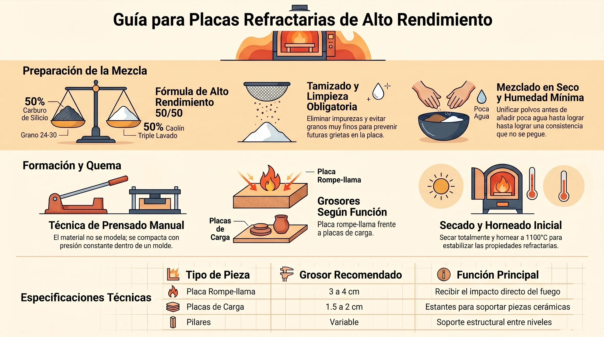
Para fabricar placas refractarias de alto rendimiento (ideales para soportar altas temperaturas y actuar como "placas rompe llama") y sus respectivos pilares, son un proceso muy específico, ya que el material se comporta distinto a la arcilla tradicional. Aquí tienes la guía paso a paso:
Materiales y Proporciones (por volumen)
- 50% de Caolín triple lavado o de alta alúmina.
- 50% de Carburo de Silicio de malla 24 a 30. Es fundamental no usar carburo fino o polvillo, ya que este tiende a agrietar y rajar las placas.
Ambos componentes se miden exactamente por el mismo volumen (por ejemplo, usando un mismo recipiente o botella como medida), no por peso.
Pasos de Fabricación
- Limpieza y Tamizado: Antes de preparar la mezcla, debes pasar el carburo de silicio por un tamiz o un mosquitero. Esto es crucial para eliminar cualquier impureza o basura gruesa que el material pueda traer desde el proveedor (en ocasiones pueden venir elementos ajenos, como tornillos).
- Mezclado en Seco: Mezcla el caolín y el carburo de silicio en seco hasta que veas que el polvo tiene un aspecto y color parejo. Recuerda usar barbijo o mascarilla para no inhalar el polvo durante este paso.
- Hidratación: Agrega el agua poco a poco, asegurándote de no excederte. Sabrás que has alcanzado la humedad perfecta y la textura adecuada cuando, al apretar un puñado de mezcla en tu mano, este mantiene la forma sin quedarse pegado a tu piel.
- Prensado de la Placa: Esta masa tiene muy poca plasticidad, por lo que no se modela de forma convencional, sino que se trabaja casi exclusivamente mediante la técnica de prensado.
- Coloca una bolsa de nylon gruesa sobre la superficie de trabajo (son ideales las bolsas donde viene empacada la arcilla).
- Vuelca la mezcla y comienza a presionarla y compactarla firmemente hacia abajo para que las partículas se ensamblen.
- Para dar la forma circular y contener los bordes, puedes usar como guía algún aro desechado o base circular. Para las dimensiones de la estructura del horno que estamos trabajando, el diámetro de la placa no debe exceder los 35 o 36 centímetros.
- Grosores Recomendados:
- Placa rompe llama: Es la placa que va ubicada abajo de todo y recibe el golpe directo del fuego. Debe ser la más gruesa, teniendo entre 3 y 4 centímetros de espesor.
- Placas superiores: Las placas que usarás para apilar tus piezas sobre los pilares pueden ser más finas, con un grosor de 1,5 a 2 centímetros.
- Secado y Horneado: Una vez que terminas de darle forma, no debes mover la placa; déjala secar completamente plana en ese mismo lugar para evitar deformaciones. Cuando esté totalmente seca, debes quemarla a una temperatura de 1050 °C a 1100 °C (ya sea en un horno eléctrico o, con mucho cuidado, en la primera horneada de tu horno a leña) para que alcance su condición refractaria y quede lista para el uso.
13. Guía de Procedimiento: Primera Quema del Horno a Leña
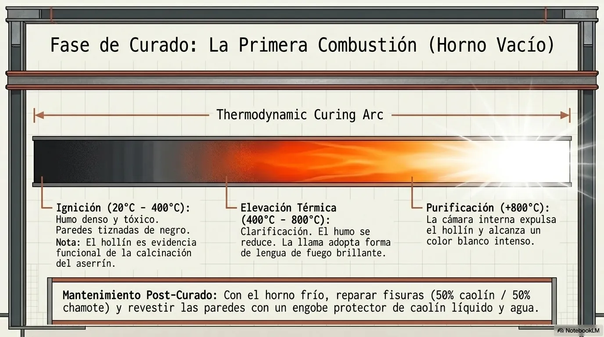
Fase 1: Condiciones Previas y Estructurales
La primera quema del horno tiene un propósito dual: por un lado, cocer la estructura cerámica propia del horno y, por otro, eliminar mediante combustión todo el aserrín presenrong> A medida que la temperatura comience a subir, el interior se tornará anaranjado y empezará a emanar un denso humo negro acompañado de vapor.
- Ausencia de carga: El horno debe estar absolutamente vacío. No se deben introducir ni placas refractarias, ni pilares, ni piezas cerámicas de ninguna índole.
- Humedad estructural: Es un requisito técnico ineludible que la estructura del horno se encuentre bien seca antes de iniciar el fuego.
Fase 2: Ignición y Fase de Ahumado (Combustión Interna)
- Alimentación inicial: El fuego debe iniciarse en la parte delantera (boca del horno) e ir introduciéndose paulatinamente hacia la cámara. Se requiere el uso exclusivo de ramas pequeñas o varillas finas (como restos de cajones de fruta o poda de sauce).
- Fenómeno termodinámico visible:
Fase 3: Elevación Térmica y Purificación de la Cámara
- Evolución de la llama: Conforme se siga alimentando el horno y la temperatura ascienda, notará una reducción progresiva del humo negro.
- Clarificación: La llama, que actúa como una "lengua de fuego", se volverá gradualmente más limpia, brillante y fuerte.
- Pico de temperatura: Al superar el umbral de los 700 a 800 grados centígrados, la cámara de cocción se limpiará y el proceso de combustión penetrará en las capas más profundas de las paredes.
Fase 4: Enfriamiento y Evaluación Estructural
- Cese de alimentación: Una vez alcanzado el pico térmico de limpieza, se debe dejar de alimentar el horno con leña.
- Choque térmico: Se debe esperar a que la estructura se enfríe de manera natural hasta el día siguiente antes de proceder a su apertura.
- Evaluación del color: Al abrir el horno, el interior debe presentar un color blanco intenso. Esta es la prueba empírica de que el hollín ha sido expulsado hacia el exterior y que la cámara interna superó exitosamente los 800 °C.
Fase 5: Mantenimiento y Curado de Superficies
Una vez finalizada la quema y con el horno frío, se debe realizar un tratamiento a las superficies internas que estarán en contacto con las futuras piezas:
- Pintura refractaria: Prepare una mezcla líquida compuesta por caolín y agua. Utilice esta solución a modo de engobe para pintar y revestir todas las paredes internas del horno, dejándolas parejas y cuidadas.
- Reparación de fisuras: Si la dilatación térmica generó alguna fisura en la estructura, el documento indica que estas pueden ser rellenadas eficientemente utilizando una pasta blanca formulada con un 50% de caolín y un 50% de chamote.
14. Adaptación Estructural Opcional: Sistema a Gas Envasado
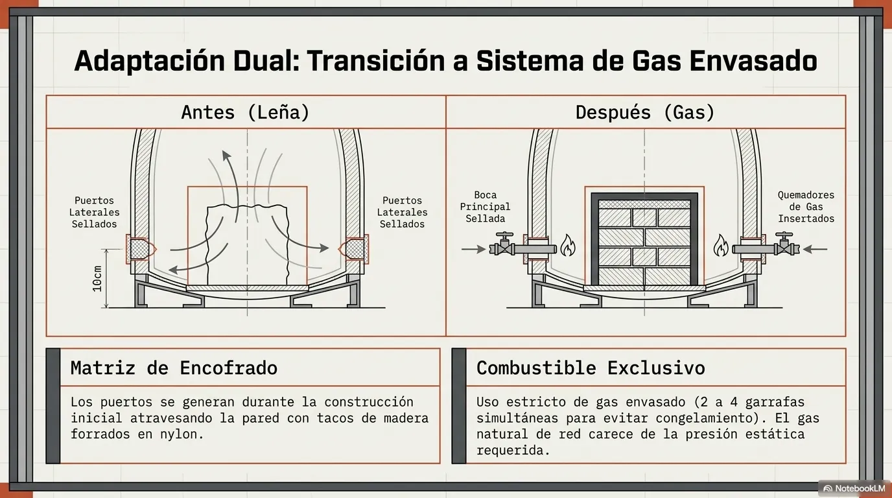
El diseño termodinámico de este horno permite dejar la estructura preparada desde su etapa de construcción para realizar una transición futura del uso de leña a un sistema de quemadores a gas. Para implementar esta matriz dual, se debe ejecutar la siguiente metodología durante la Fase de Encofrado:
Metodología de Perforación y Matrices de Contención
- Cortes Laterales: Sobre el tambor metálico exterior, se deben realizar dos aberturas laterales (ventanitas) con dimensiones estrictas de 12 x 12 centímetrosAlternativamente, algunas configuraciones previas mencionan un diámetro de 10 x 10 cm
- Eje de Altura: Estas aberturas no van a ras de suelo; deben estar elevadas a una distancia de entre 10 y 12 centímetros medidos desde el piso del tambor hacia arriba.
- Encofrado del Puerto: Antes de verter la mezcla aislante en las paredes (aserrín, chamote, etc.), se debe colocar un taco de madera envuelto en una bolsa de nylon atravesando cada abertura. Esto evitará que la mezcla rellene ese sector y generará un túnel o hueco libre hacia la cámara de cocción.
- Tapones "Quita y Pon": Mientras el horno opere a leña, estos huecos deben estar clausurados usando un tapón fabricado con la misma mezcla aislante de la pared, o bien, un ladrillo refractario. Cuando se desee cambiar a gas, simplemente se retiran los tapones y se introducen los quemadores/mecheros por dichos puertos.
Parámetros de Operación a Gas
- Sellado de la Boca Principal: Para operar a gas, la boca frontal de alimentación original (donde se introducía la leña) debe ser sellada en su totalidad utilizando ladrillos refractarios para evitar la pérdida calórica o diagramar una tapa con el material aislante.
- Requerimiento de Combustible (Gas Envasado): Está rigurosamente desaconsejado el uso de la red de gas natural domiciliario, ya que carece de la fuerza y presión estática necesarias para impulsar la llama en esta cámara. Se requiere usar gas envasado en garrafas
- Capacidad del Sistema: Se recomienda que para abastecer adecuadamente el quemador de este horno se pueden requerir hasta de dos a cuatro garrafas conectadas en simultáneo para evitar el congelamiento de los cilindros y mantener la presión térmica.
15. Resumen Cuantitativo: Total de Kilos por Método de Construcción
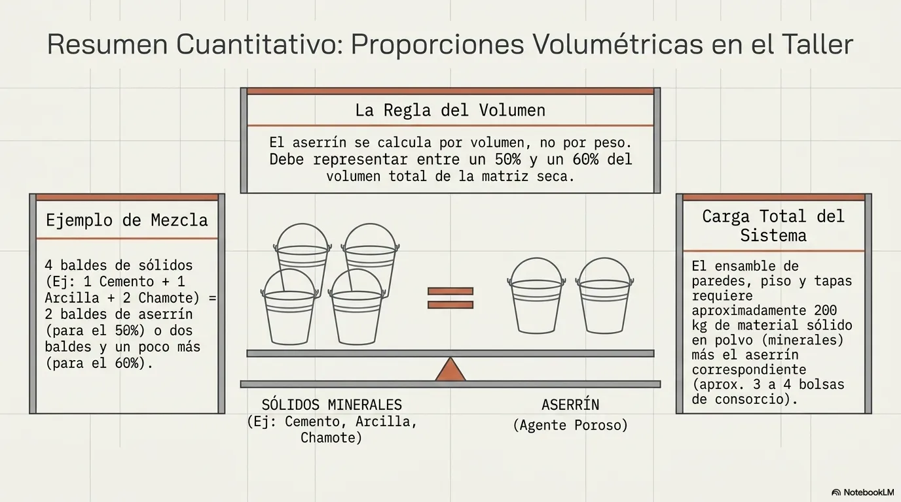
Materiales en polvo
Generalmente los materiales de los minerales sólidos se comercializan en bolsas de 25 kg. En total la base de 200 kg totales de material para conformar la cámara de cocción principal (paredes, piso y tapas).
Para calcular el aserrín es la siguiente:
Elegir un recipiente patrón (por ejemplo, un balde de albañil). Ese mismo balde su usa para medir absolutamente todos los componentes de la fórmulaCálculo sobre el total: El aserrín debe representar entre un 50% y un 60% del volumen total de la mezcla seca
Ejemplo práctico (Fórmula en baldes): Si preparas la mezcla base y los polvos suman un total de 4 baldes (por ejemplo: 1 balde de cemento, 1 balde de arcilla y 2 baldes de chamote), el total es de 4 partes . Para calcular el 50% de aserrín sobre ese volumen, debes incorporar 2 baldes de aserrín . Si busca alcanzar el 60%, la proporción visual será "un balde y un poquito más" por cada dos baldes de mezcla sólida
| Método de Construcción | Desglose de Materiales (Masa Sólida). | Carga Total en Polvo | Requerimiento Volumétrico (Aserrín). |
|---|---|---|---|
| Alta Temperatura (Porcelana / +1100°C). |
|
230 kg | 60% del volumen de la matriz seca (Aprox. 3 a 4 bolsas de consorcio). |
| Baja/Media Temperatura (Estándar / 1050°C a 1100°C). |
|
~200 kg (Solo estructura). | 50% a 60% del volumen de la matriz seca |
| Baja/Media Temp. (Opción sin Chamote / 1050°C). |
Proporciones sobre una matriz base de 200 kg:
|
~200 kg | 0% (La inclusión de vermiculita expandida exime estrictamente la adición de aserrín). |
16. Metodología de Medición Térmica: Barras Pirométricas
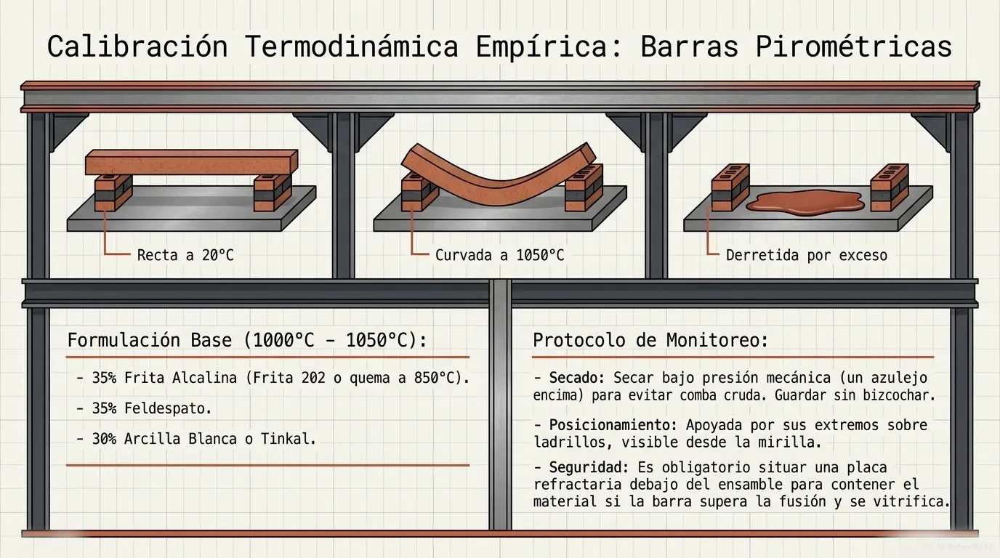
Fundamento Termodinámico
Estas barras están modeladas a partir de una fórmula cerámica específica que posee un punto de fusión predeterminado. Al alcanzar la temperatura calibrada dentro de la cámara de cocción, la barra se curva, indicando visualmente que se ha llegado al pico térmico deseado. Si la temperatura excede dicho umbral, el material pierde su integridad, comenzando a deformarse y vitrificarse.
Formulación Química (Rango 1000°C - 1050°C)
- 35% Frita Alcalina: Se recomienda estrictamente la frita 202, o en su defecto, cualquier frita alcalina cuyo punto de quemado sea a 850°C.
- 35% Feldespato.
- 30% Arcilla Blanca o Tinkal: En caso de no disponer de esta variante, se debe emplear una arcilla que contenga aproximadamente un 26% de alúmina.
- Nota de alteración térmica: Para fabricar barras calibradas para altas temperaturas (ej. 1100°C), los documentos estipulan la necesidad de incorporar creta o carbonato de calcio a la matriz.
Protocolo de Manufactura y Modelado
- Hidratación: Los polvos deben mezclarse en un bol (idealmente con mortero y pilón) añadiendo agua en cantidades mínimas. Se debe incorporar solo el líquido necesario para que la pasta se despegue de las paredes, adquiriendo una consistencia plástica y "chiclosa". Si accidentalmente se excede la cantidad de agua, la pasta debe colocarse sobre una placa de yeso durante unos minutos para que absorba la humedad sobrante.
- Superficie de Trabajo: El modelado debe ejecutarse sobre una tabla de madera rígida que esté obligatoriamente forrada con una bolsa de nylon. Si la arcilla toca la madera directamente, esta absorberá la humedad basal y provocará fisuras estructurales.
- Dimensiones Críticas: Se debe modelar un prisma rectangular con el espesor y ancho aproximado de un dedo, y una longitud total de 8 a 10 centímetros. Para sellar posibles grietas en los bordes, se debe humedecer apenas un dedo; el uso de esponjas está terminantemente prohibido.
Secado y Rotulación
- Secado Bajo Presión: Es un requerimiento inexcusable dejar secar las barras con un peso posicionado encima (como un azulejo o placa de cerámica) para neutralizar cualquier comba o alabeo durante la contracción por humedad.
- Rotulación: Una vez alcanzado el secado completo, se debe escribir en un extremo la temperatura de calibración empleando un óxido (por ejemplo, óxido de manganeso).
- Almacenaje: Las barras se deben guardar en un contenedor en estado crudo (secas). Bajo ninguna circunstancia deben ser sometidas a una cocción previa o bizcochado, ya que perderían su utilidad como medidores de fusión.
Disposición en la Cámara de Cocción
- Emplazamiento: Durante la estiba del horno, la barra debe posicionarse apoyada por sus dos extremos sobre ladrillos refractarios. Si se opera un horno a leña, debe situarse cerca de la mirilla para permitir la monitorización visual de su curvatura.
- Contención de Seguridad: Es obligatorio colocar una placa refractaria debajo del ensamble de la barra. Esta placa actuará como contención en caso de que la barra supere su punto de fusión y se derrita, evitando así que el material vitrificado se adhiera y dañe los componentes del horno.
17. Diseño y Manufactura de la Parrilla para Leña
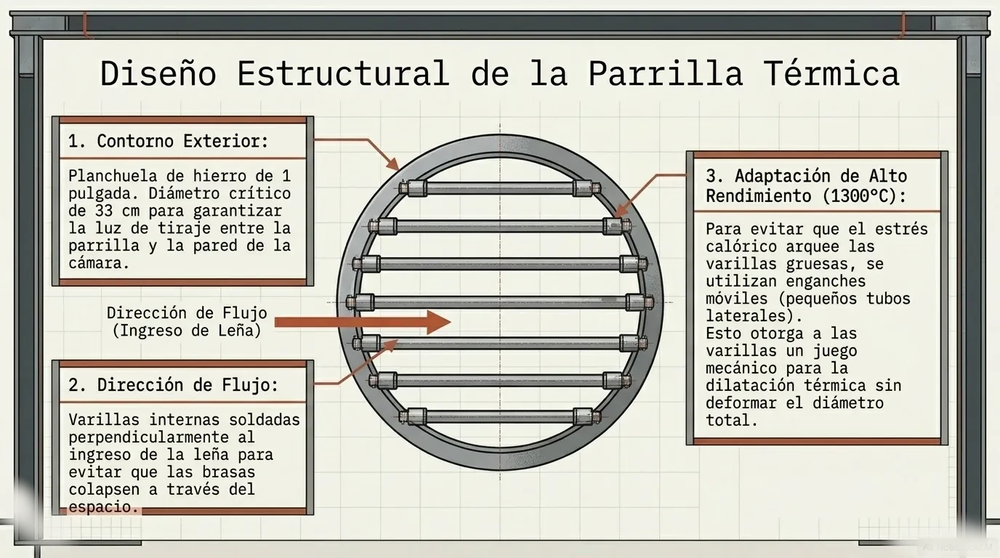
1. Especificaciones
- Material Base: El contorno de la parrilla debe estar conformado por una planchuela de hierro de una pulgada de grosor.
- Diámetro Crítico: El diámetro exterior exacto para este círculo debe ser de 33 centímetros. Esta medida es fundamental, ya que deja una luz entre la parrilla y la pared de la cámara, permitiendo el flujo de aire y garantizando un buen tiraje en el horno.
2. Disposición de las Varillas Internas
- Orientación: Las varillas de hierro que cruzan el interior deben colocarse en sentido contrario (perpendicular) a la dirección en la que se introduce la leña al horno. Si se colocaran en la misma línea de ingreso, los leños caerían a través del espacio existente entre las varillas.
- Espaciado: Las varillas no deben estar ni demasiado juntas ni demasiado separadas, asegurando la contención de la madera.
3. Variantes según la Temperatura Operativa
- Rango Medio (1050°C a 1100°C): Para estas temperaturas, no es necesario emplear varillas muy gruesas; es factible utilizar varillas más finas sin riesgo de que se arqueen con facilidad.
- Alto Rendimiento (1200°C a 1300°C): Operar a estas temperaturas exige el uso de varillas de mayor grosor. Las varillas finas sometidas a este rango térmico tienden a doblarse y arquearse gravemente por el estrés calórico.
- Adaptación Mecánica (Juego Térmico): Para evitar el arqueamiento en altas temperaturas, se diseñó una adaptación que consiste en no soldar la varilla directamente al borde. En su lugar, se fabrican pequeños "tubitos" o enganches móviles que permiten que la estructura tenga un juego mecánico de dilatación sin deformarse.
Diagrama Estructural de la Parrilla (Vista Superior)
_______________________
/ \ <-- Planchuela de hierro de 1 pulgada (Diámetro: 33 cm)
| [O] [O] [O] [O] | <-- "Tubitos" de enganche móvil (evitan arqueamiento)
| | | | | |
| | | | | | <-- Varillas (perpendiculares a la entrada de leña)
| | | | | |
| | | | | |
| [O] [O] [O] [O] |
\_________________________/
^ ^ ^ ^ ^ ^ ^
[Dirección de ingreso de la leña]